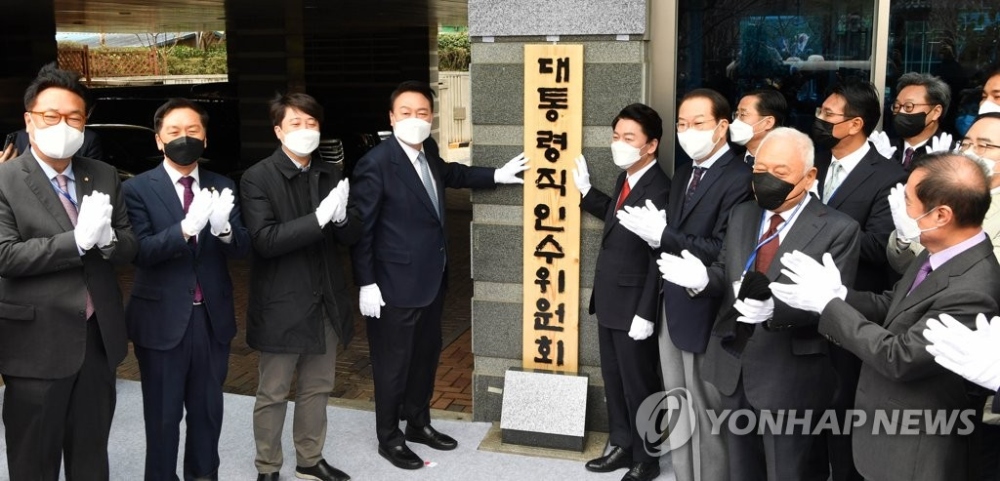

 '윤석열 인수위'는 출범부터 빠른 편이다. 2000년대 들어 인수위를 가동한 역대 정권 중에서 이명박 전 대통령 인수위가 당선 이후 7일 만에 들어서 가장 빨랐다. 박근혜 전 대통령 인수위는 18일, 노무현 전 대통령 인수위는 11일이 걸렸다. 하루빨리 정부 인수인계를 마무리하고 '윤석열 정부'만의 국정과제 로드맵을 수립하는 단계로 넘어가겠다는 윤 당선인의 의중이 반영된 것으로 보인다. 윤 당선인은 첫 전체회의를 주재하며 "무엇보다 새 정부는 일 잘하는 정부, 능력과 실력 겸비한 정부가 돼야 한다"며 "인수위는 신속한 업무파악을 하고 개선해나갈 점과 새롭게 추진해야 할 과제들을 빈틈없이 챙겨주실 것을 부탁드린다"고 당부했다. 실질적인 인수인계 절차는 내주부터 본격화한다. 김은혜 대변인은 오전 브리핑에서 "전문위원과 실무위원 인선은 가급적 오늘 안으로 마무리하려고 한다. 늦으면 하루 정도 주말까지 오차가 있을 수 있다"면서 "다음주 월요일(21일)에는 전문위원, 실무위원 시스템을 장착해서 나갈 것"이라고 설명했다. 인수위가 공식활동에 들어가면 분과별로 기존 정책에 대한 정부 보고와 검토를 우선으로 거친 뒤 필요한 경우 기존 정책을 수정하고 새로운 정책을 반영하는 작업을 하게 된다. 국정 목표와 과제를 설정하는 기획조정분과를 비롯해 청와대, 총리실, 국가정보원 등을 담당하는 정무사법행정분과, 경제1·2분과, 외교안보분과 등의 경우 문재인 정부의 정책기조를 상당 부분 수정할 것으로 보인다. 안 인수위원장은 회의에서 "50여 일 동안 우리나라 전체 국정과제 철학을 정비하는 것이 쉬운 일이 아니다"라면서 향후 인수위 운영과 국정과제 수립 과정에서 "선택과 집중"이 필요하다고 강조했다. 그러면서 "위원들이 개별적으로 검토된다고 말만 해도 정책이 변경 폐기되거나 사회 혼란이 많이 온다"며 '개별 의견 자제령'을 내렸다. 인수위는 최우선 국정 과제로 코로나19 위기 극복을 꼽았다. 윤 당선인은 코로나비상대책특위 활동과 관련해 "영세 자영업자·소상공인분들에 대한 신속한 손실보상과 더불어 방역, 의료 문제 등을 중점 다뤄주시길 바란다"며 "또 다른 팬데믹이 올 경우에 대비해 선제적으로 대응할 수 있는 준비도 부탁드린다"고 말했다.
| 윤석열 48.56% |
| 이재명 47.83% |
| 심상정2.37% |
| 허경영0.83% |
| 김재연 0.11% |